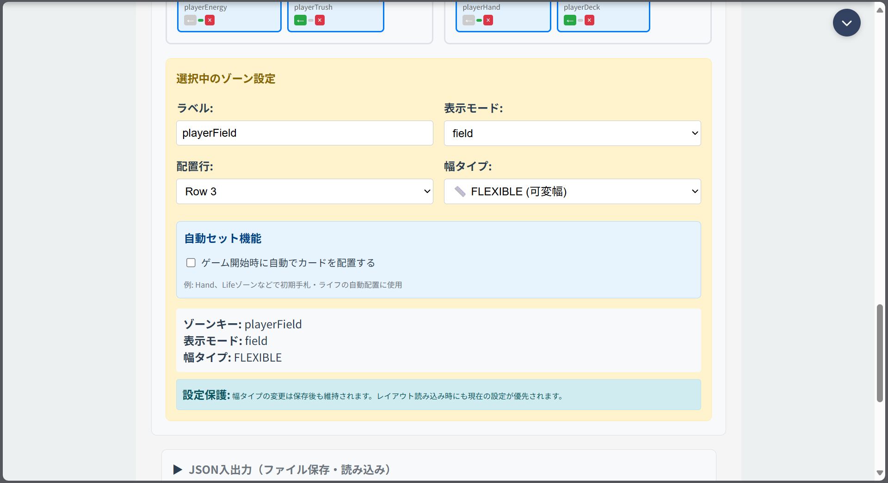

TCGSim
ブラウザで使えるトレーディングカードゲームのシミュレーター

| URL | https://tcgsim.net/(機能の利用にはアカウント登録が必要) |
|---|---|
| 期間 | 2025.03 – 現在 |
| 開発体制 | 個人 |
| 使用技術 | React、Redux Toolkit、Node.js(Express)、Socket.IO、MongoDB、Firebase Authentication、Stripe、nginx、PM2、Jest、Playwright、GitHub Actions |
| ソースコード | 非公開 |
作った理由
カードゲームの調整(大会に向けた練習や検証)に使うためです。既存のデジタルゲームはルールどおりの操作しかできず、巻き戻しもできません。対面では自由に操作できますが、過去の盤面を再現できません。
TCGSimでは、操作をすべて手動で行えるようにし、操作の記録から巻き戻しや分岐ができるようにしました。
主な機能
- 一人回し
- オンライン対戦(ルームを作成し、盤面をリアルタイムに同期)
- リプレイ、観戦、途中の盤面からの分岐
- 盤面のゾーン配置の編集
- デッキ・カードの作成と管理

実装
- 状態の更新処理の集約 カードの移動やドローなどの操作はReducerで処理し、一人回しとオンライン対戦で共通化。
- 巻き戻しと分岐 操作ログと盤面のスナップショットを保存し、過去の盤面への巻き戻し、分岐、リプレイに利用。
- オンライン対戦の同期 各プレイヤーの操作をサーバで処理し、更新後の状態を全員に配信。
- インフラ VPS(Ubuntu)上でnginxをリバースプロキシに、PM2でプロセスを管理。HTTPS化済み。E2Eテストとテスト環境へのデプロイはGitHub Actionsで自動化。
苦労した点
開発を始めた時点では設計の知識が足りず、機能の追加や共通処理の切り出しのたびに、関係のない箇所で不具合が出ていました。責務の分離とモジュール化を意識して、構成を少しずつ見直しました。